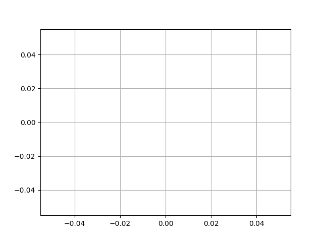

Version 2.2.4
Note
Click here to download the full example code
This example showcases: - using a generator to drive an animation, - changing axes limits during an animation.
import numpy as np
import matplotlib.pyplot as plt
import matplotlib.animation as animation
def data_gen(t=0):
cnt = 0
while cnt < 1000:
cnt += 1
t += 0.1
yield t, np.sin(2*np.pi*t) * np.exp(-t/10.)
def init():
ax.set_ylim(-1.1, 1.1)
ax.set_xlim(0, 10)
del xdata[:]
del ydata[:]
line.set_data(xdata, ydata)
return line,
fig, ax = plt.subplots()
line, = ax.plot([], [], lw=2)
ax.grid()
xdata, ydata = [], []
def run(data):
# update the data
t, y = data
xdata.append(t)
ydata.append(y)
xmin, xmax = ax.get_xlim()
if t >= xmax:
ax.set_xlim(xmin, 2*xmax)
ax.figure.canvas.draw()
line.set_data(xdata, ydata)
return line,
ani = animation.FuncAnimation(fig, run, data_gen, blit=False, interval=10,
repeat=False, init_func=init)
plt.show()
Keywords: matplotlib code example, codex, python plot, pyplot Gallery generated by Sphinx-Gallery